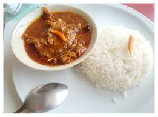

Home
Riz sauce graine

Le riz à la sauce graine est un super mets ivoirien qui provient de l'ouest de la Côte d'ivoire
Les ingrédients :
- Pâte de graine
- Du riz blanc
- Viande de brousse
- Poisson sécher
- Poisson frais tilapia
Etapes de la préparation :
- Faire boullir la pâte de graine
- Ajouter la Viande de brousse
- Ajouter les poissons
- Ajouter l'Assaisonnement
- Laisser mijoter 90 minutes
- Servir avec le riz, de la bière ou du vin